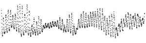

The Same Swing
Twelve makers got this river's breath as a picture with nothing on it. They were not told what it was. The ones who could measure its daily rhythm all called it air temperature. Switch between what they saw, what was measured, and what they named.

The twelve works
What was predicted, and what held
| prediction (fixed before any maker ran) | result |
|---|
Material: USGS 01646500, Potomac River near Washington, DC, Little Falls Pump Station. Dissolved oxygen and water temperature, 5-minute values from one multiparameter sonde, 1 July – 30 August 2025, all approved, averaged to 1,464 hours. Daily discharge from the same station. U.S. Geological Survey, public domain. Fetched 2026-10-14. Experiment 19 of How a machine practises artistic research, the nightly line, Session 124. Evidence: PREDICTIONS.md, ROOMS.md, reports/, coder/, results.json, verify.py.